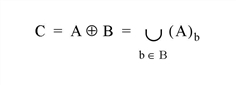
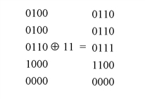
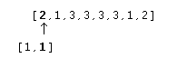
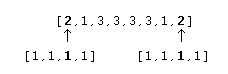

The DILATE function implements the morphologic dilation operator on both binary and grayscale images
Mathematical morphology is a method of processing digital images on the basis of shape. A discussion of this topic is beyond the scope of this manual. A suggested reference is: Haralick, Sternberg, and Zhuang, “Image Analysis Using Mathematical Morphology,” IEEE Transactions on Pattern Analysis and Machine Intelligence , Vol. PAMI-9, No. 4, July, 1987, pp. 532-550. Much of this discussion is taken from that article.
Briefly, the DILATE function returns the dilation of Image by the structuring element Structure . This operator is commonly known as “fill”, “expand”, or “grow.” It can be used to fill “holes” of a size equal to or smaller than the structuring element.
Used with binary images, where each pixel is either 1 or 0, dilation is similar to convolution. Over each pixel of the image, the origin of the structuring element is overlaid. If the image pixel is nonzero, each pixel of the structuring element is added to the result using the “or” operator.
Letting A Å B represent the dilation of an image A by structuring element B , dilation can be defined as:

where (A) b represents the translation of A by b . Intuitively, for each nonzero element b i,j of B , A is translated by i,j and summed into C using the “or” operator. For example:

In this example, the origin of the structuring element is at (0,0).
Used with grayscale images, which are always converted to byte type, the DILATE function is accomplished by taking the maximum of a set of sums. It can be used to conveniently implement the neighborhood maximum operator with the shape of the neighborhood given by the structuring element.
The opening of image B by structuring element K is defined as ( B Ä K ) Å K . The closing of image B by K is defined as ( B Å K ) Ä K where the Ä symbol represents the erosion operator implemented by the IDL ERODE function.
As stated by Haralick et al , the result of iteratively applied dilations and erosions is an elimination of specific image detail smaller than the structuring element without the global geometric distortion of unsuppressed features. For example, opening an image with a disk structuring element smooths the contour, breaks narrow isthmuses, and eliminates small islands and sharp peaks or capes.
Closing an image with a disk structuring element smooths the contours, fuses narrow breaks and long thin gulfs, eliminates small holes, and fills gaps on the contours.
Note: MORPH_OPEN and MORPH_CLOSE can also be used to perform these tasks.
Result = DILATE( Image , Structure [, X 0 [, Y 0 [, Z 0 ]]] [, / CONSTRAINED [, BACKGROUND = value ]] [, / GRAY [, / PRESERVE_TYPE | , / UINT | , / ULONG ]] [, VALUES = array ] )
The DILATE function returns the dilation of Image by the structuring element Structure .
A one-, two-, or three-dimensional array upon which the dilation is to be performed. If the parameter is not of byte type, a temporary byte copy is obtained. If neither of the keywords GRAY or VALUES is present, the image is treated as a binary image with all nonzero pixels considered as 1.
A one-, two-, or three-dimensional array that represents the structuring element. Elements are interpreted as binary: values are either zero or nonzero. This argument must have the same number of dimensions as Image .
Optional parameters specifying the one-, two-, or three-dimensional coordinate of the structuring element’s origin. If omitted, the origin is set to the center, ([ N x /2], [ N y /2], [ N z /2]), where N x , N y , and N z are the dimensions of the structuring element array. The origin need not be within the structuring element.
Set this keyword to the pixel value that is to be considered the background when dilation is being performed in constrained mode. The default value is 0.
If this keyword is set and grayscale dilation has been selected, the dilation algorithm will operate in constrained mode. In this mode, a pixel is set to the value determined by normal grayscale dilation rules in the output image only if the current value destination pixel value matches the BACKGROUND pixel value. Once a pixel in the output image has been set to a value other than the BACKGROUND value, it cannot change.
Set this keyword to perform grayscale, rather than binary, dilation. The nonzero elements of the Structure parameter determine the shape of the structuring element (neighborhood). If VALUES is not present, all elements of the structuring element are 0, yielding the neighborhood maximum operator.
Set this keyword to return the same type as the input array. This keyword only applies if the GRAY keyword is set.
Set this keyword to return an unsigned integer array. This keyword only applies if the GRAY keyword is set.
Set this keyword to return an unsigned longword integer array. This keyword only applies if the GRAY keyword is set.
An array with the same dimensions as Structure providing the values of the structuring element. The presence of this parameter implies grayscale dilation. Each pixel of the result is the maximum of the sum of the corresponding elements of VALUE and the Image pixel value. If the resulting sum is greater than 255, the return value is 255.
Note:
Also see “Eroding and Dilating Image Objects” (Chapter 9,
Image Processing in IDL
) in the
help/pdf
directory of your IDL installation.
This example thresholds a gray scale image at the value of 100, producing a binary image. The result is then “opened” with a 3 pixel by 3 pixel square shape operator, using the DILATE and ERODE operators. The effect is to remove holes, islands, and peninsula smaller than the shape operator:
; Threshold and make binary image:
B = A GE 100
; Create the shape operator:
S = REPLICATE(1, 3, 3)
; "Opening" operator:
C = DILATE(ERODE(B, S), S)
; Show the result:
TVSCL, C
For grayscale images, DILATE takes the neighborhood maximum, where the shape of the neighborhood is given by the structuring element. Elements for which the structuring element extends off the array are indeterminate. For example, assume you have the following image and structuring element:
image = BYTE([2,1,3,3,3,3,1,2])
s = [1,1]
If the origin of the structuring element is not specified in the call to DILATE, the origin defaults to one half the width of the structuring element, which is 1 in this case. Therefore, for the first element in the image array, the structuring element is aligned with the image as depicted below:

This will cause an indeterminate value for the first element in the DILATE result. If edge values are important, you must pad the image with as many zeros as there are elements in the structuring element that extend off the array, in all dimensions. In this case, you would need to pad the image with a single leading zero. If the structuring element were s=[1,1,1,1] , and you specified an origin of 2, the structuring element would align with the image as follows:

Therefore, you would need to pad the image with at least two leading zeros and at least one trailing zero. You would then perform the dilation operation on the padded image, and remove the padding from the result.
The following code illustrates this method:
image = BYTE([2,1,3,3,3,3,1,2])
s = [1,1] ; Structuring element
PRINT, 'Image: '
PRINT, image
PRINT, 'Dilation using no padding: '
PRINT, DILATE(image, s, /GRAY)
result = DILATE([0, image], s, /GRAY)
PRINT, 'Dilation using padding: '
PRINT, result[1:N_ELEMENTS(image)]
IDL prints:
Image:
2 1 3 3 3 3 1 2
Dilation using no padding:
1 3 3 3 3 3 2 2
Dilation using padding:
2 3 3 3 3 3 2 2
|
Pre 4.0 |
Introduced |
ERODE , MORPH_CLOSE , MORPH_DISTANCE , MORPH_GRADIENT , MORPH_HITORMISS , MORPH_OPEN , MORPH_THIN , MORPH_TOPHAT